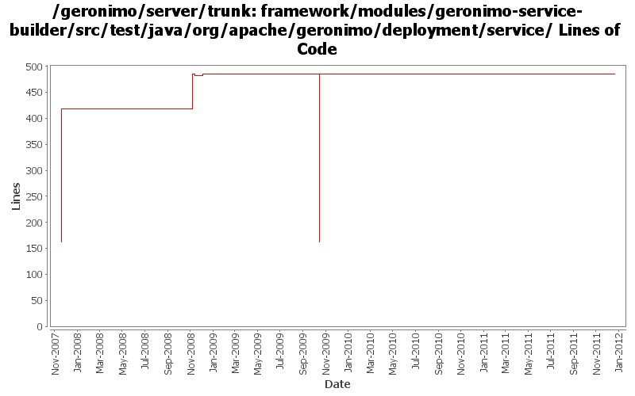

[root]/framework/modules/geronimo-service-builder/src/test/java/org/apache/geronimo/deployment/service

| Author | Changes | Lines of Code | Lines per Change |
|---|---|---|---|
| Totals | 15 (100.0%) | 655 (100.0%) | 43.6 |
| djencks | 10 (66.7%) | 330 (50.4%) | 33.0 |
| gdamour | 4 (26.7%) | 323 (49.3%) | 80.7 |
| kevan | 1 (6.7%) | 2 (0.3%) | 2.0 |
GERONIMO-6240 make xml attribute and reference builders work and provide GBeanBuilder as a gbean for modules builders to use
5 lines of code changed in 1 file:
GERONIMO-6240 Make several base geronimo functions (kernel, deployer, etc) DS services and make the car-maven-plugin take advantage of that. Server assembly doesn't work yet, builds framework.
0 lines of code changed in 2 files:
GERONIMO-4916 step 2 move sandbox osgi framework into trunk
323 lines of code changed in 3 files:
GERONIMO-4916 step 1 remove old framwork
0 lines of code changed in 3 files:
GERONIMO-4403 re-add private-classes element handling.
2 lines of code changed in 1 file:
Revert addition of private-classes element. Private classes can be
configured via scripts.
(GERONIMO-4403) Provide a mechanism to hide specific classes of a configuration to all its children
0 lines of code changed in 1 file:
Add private-classes element which allows specific classes to be hidden from all child configurations. In effect, they are private to the configuration.
(GERONIMO-4403) Provide a mechanism to hide specific classes of a configuration to all its children
66 lines of code changed in 1 file:
GERONIMO-1761 move geronimo-util to geronimo-crypto. Still pending mv of one test directory that svn wouldn't let me move
2 lines of code changed in 1 file:
Add a convenience PropertyEditor, JavaBeanXmlAttributeEditor, which is
intended to be used as a base class for property editors of JavaBeans
defined as gbean xml-attributes. This base property editor is able to
skip the "xml-serialization" of properties whose read methods are annotated
with @DoNotPersist. It is also able to encrypt prior xml-serialization the
properties whose read methods are annotated with @EncryptOnPersist.
It is now possible to declare a propertyEditor on a config.xml gbean attribute.
This property editor is used to retrieve the value of the attribute based
on its mixed-content. Combined with the above convenience PropertyEditor, it
is now easy to override gbean attributes defined by Java xml-attribute in
configuration plans.
Write a BasicExtendedJMXConnectorInfoEditor to allow the override of the
extendedJMXConnectorInfo attribute of BasicNodeInfo. Users can now easily
declare new nodes within the clustering configuration.
Fixes GERONIMO-3610 - Allows the override of XML JavaBean attribute in
config.xml
257 lines of code changed in 2 files: